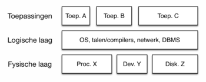

De fysieke laag vormt de basis van het 3-lagenmodel en omvat alle hardwarecomponenten van een computersysteem. Enkele van de belangrijkste begrippen in deze laag zijn:
Processor (CPU): De centrale verwerkingseenheid (CPU) is het brein van de computer. Het bestaat uit twee essentiële onderdelen, de Arithmetic Logic Unit (ALU) voor wiskundige bewerkingen en de Control Unit voor het beheer van instructies.
Werkgeheugen (RAM/ROM): RAM (Random Access Memory) is het tijdelijke geheugen van een computer waar gegevens en programma's worden opgeslagen tijdens actief gebruik. ROM (Read-Only Memory) bevat permanente instructies die nodig zijn om het systeem op te starten.
Bus: Een bus is een communicatiekanaal waarmee gegevens tussen verschillende hardwarecomponenten kunnen worden overgedragen.
Von Neumann-architectuur: Dit is een architectuurconcept waarbij zowel gegevens als instructies in hetzelfde geheugen worden opgeslagen en op dezelfde manier worden verwerkt.
Moederbord: Het moederbord is het hoofdcircuit van een computer waarop alle hardwarecomponenten zijn aangesloten en met elkaar communiceren.
System-on-a-chip: Een System-on-a-chip (SoC) is een geïntegreerde chip waarop meerdere componenten, waaronder de CPU, GPU, en geheugen, zijn gecombineerd om ruimte te besparen en de efficiëntie te verhogen.
Permanent geheugen/opslagmedia: Dit omvat de opslagapparaten, zoals harde schijven en SSD's, waar gegevens permanent kunnen worden opgeslagen.
Randapparatuur: Randapparatuur zijn externe apparaten die aan de computer worden gekoppeld, zoals toetsenborden, muizen, printers en beeldschermen.
Verbindingen: kabels/interfaces: De fysieke laag omvat ook de kabels en interfaces waarmee verschillende hardwarecomponenten met elkaar en met externe apparaten worden verbonden.
3-lagenmodel van een telefoon